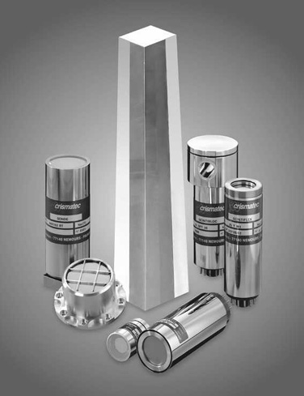
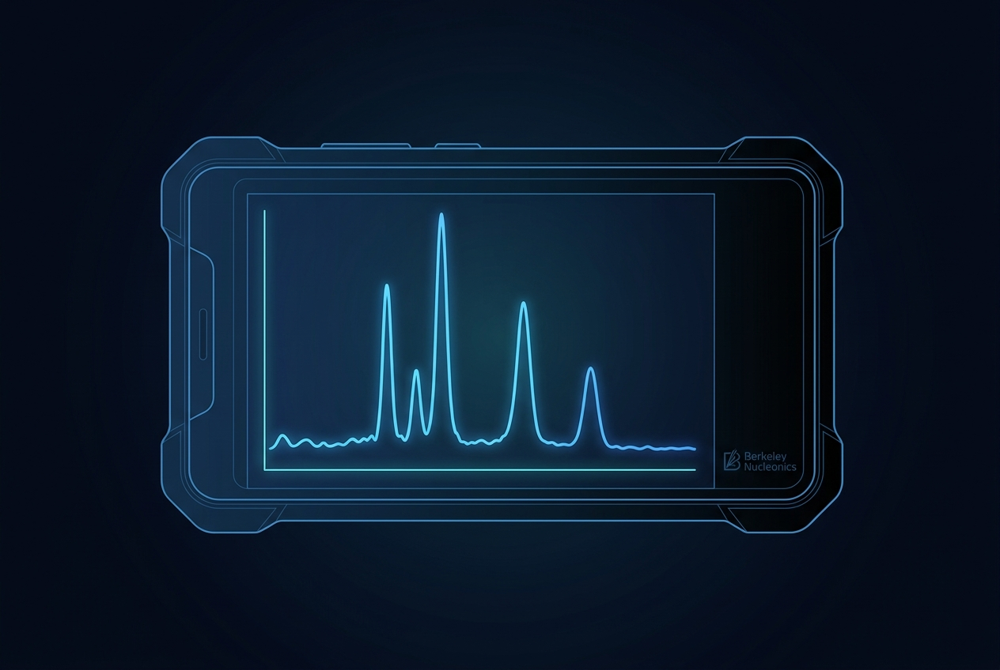
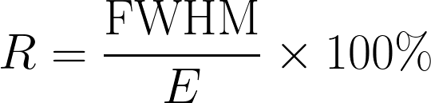
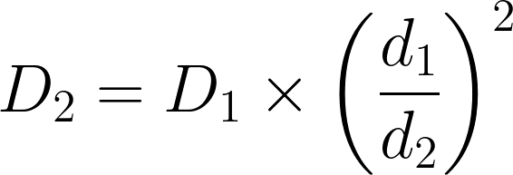

Appendix C: Glossary, Acronyms, and Time-Distance-Shielding Aid
C.1 Glossary
ALARA. As Low As Reasonably Achievable. Foundational dose-reduction principle.
Background. The radiation level present at a location absent any specific source of interest; varies with geology, building materials, and altitude.
Bremsstrahlung. "Braking radiation." X-rays produced when a charged particle (e.g., a beta) decelerates in matter. Why pure beta sources produce some gamma signal.
Confidence (RIID). A score or label indicating how well the spectrum matches a library entry.

Compton continuum. The smooth low-energy slope below a photopeak in a spectrum, from photons that scattered before being detected.
Cordon. A perimeter excluding non-essential personnel from an area.
Decay chain. A sequence of radioactive isotopes, each transforming into the next, until reaching a stable element.
Dose rate. Energy deposited in tissue per unit time; the operator's safety indicator.
FWHM. Full Width at Half Maximum. A measure of energy resolution; smaller is better.
Gamma ray. Penetrating electromagnetic radiation emitted by atomic nuclei.
HVL. Half-Value Layer. Material thickness that halves the dose rate.

Isotope. A specific form of an element distinguished by mass number (number of neutrons + protons in the nucleus).
MCA. Multichannel Analyzer. The electronics that sort detector pulses into an energy spectrum.
N42.42. ANSI/IEEE standard XML format for radiation spectra and event data.
NORM / TENORM. Naturally / Technologically Enhanced Naturally Occurring Radioactive Material. Routine background sources.
Photopeak. A peak in a spectrum at the full energy of an emitted gamma; the diagnostic feature for identification.
PRD. Personal Radiation Detector. Wearable alarm-only unit.
Reachback. Channel for accessing radiological expertise during a live event.
RIID. Radioisotope Identification Device.
Scintillator. A material that flashes light in response to ionizing radiation, used as the gamma-detecting heart of a RIID.
SNM. Special Nuclear Material. Plutonium, uranium-233, uranium enriched in U-235, materials of weapons interest.


Spectrum. Histogram of detector counts vs. energy; the operator's working canvas.
Survey meter. A handheld dose-rate meter (typically GM tube or scintillator probe).
C.2 Acronyms
Every acronym used in this guide, spelled out.
| Acronym | Meaning |
|---|---|
| ALARA | As Low As Reasonably Achievable |
| ANSI | American National Standards Institute |
| BNC | Berkeley Nucleonics Corporation |
| CBRN | Chemical, Biological, Radiological, and Nuclear |
| CeBr | Cerium bromide, a scintillator crystal (CeBr₃) |
| DHS | Department of Homeland Security |
| DOE | Department of Energy |
| EPA | Environmental Protection Agency |
| FBI | Federal Bureau of Investigation |
| FEMA | Federal Emergency Management Agency |
| FRMAC | Federal Radiological Monitoring and Assessment Center |
| GM | Geiger-Muller, as in a GM-tube survey meter |
| HazMat | Hazardous Materials |
| HEU | Highly Enriched Uranium |
| HPGe | High-Purity Germanium, a high-resolution detector |
| IAEA | International Atomic Energy Agency |
| IC | Incident Commander |
| IEC | International Electrotechnical Commission |
| LaBr | Lanthanum bromide, a scintillator crystal (LaBr₃) |
| LE | Law Enforcement |
| MCA | Multichannel Analyzer |
| NORM | Naturally Occurring Radioactive Material |
| NRC | Nuclear Regulatory Commission |
| PPE | Personal Protective Equipment |
| PRD | Personal Radiation Detector |
| RAP | Radiological Assistance Program |
| RCP | Radiation Control Program (state) |
| RDD | Radiological Dispersal Device (a "dirty bomb") |
| RIED | Flagged for review: not defined elsewhere in this guide, likely a typo for RIID. Confirm or remove. |
| RIID | Radioisotope Identification Device |
| SNM | Special Nuclear Material |
| TDS | Time, Distance, Shielding |
| TENORM | Technologically Enhanced Naturally Occurring Radioactive Material |
| WIPP | Waste Isolation Pilot Plant |
C.3 Time-Distance-Shielding Quick Aid
If at distance d₁ the dose rate is D₁, then at distance d₂ the dose rate is approximately the inverse-square estimate:

Examples (point source, no shielding change):
- 100 mR/hr at 1 m → 25 mR/hr at 2 m → 4 mR/hr at 5 m → 1 mR/hr at 10 m
- 1,000 mR/hr at 1 m → 250 at 2 m → 40 at 5 m → 10 at 10 m → 1 at 31 m
- Want to drop 100× from the current dose rate? Move 10× farther.
If you must add shielding, match the material to the threat:
- Lead. Best stopping power per inch for high-energy gammas. Expensive and heavy.
- Concrete and earth. Widely available. Half-value layers are larger, but the mass accumulates quickly.
- Steel. Moderate. Vehicle panels and structural members add modest protection.
- Water. Surprisingly effective. A few feet of water shields well.
- Lead aprons. Built for diagnostic X-ray (low keV). They give little benefit against Co-60 or Cs-137.
If you must reduce time:
- Plan the task before entering. Rehearse it cold.
- Run, do not walk. (Within reason, do not trip.)
- Rotate teams. Two teams at half time each beats one team at full time.